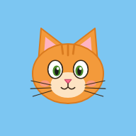
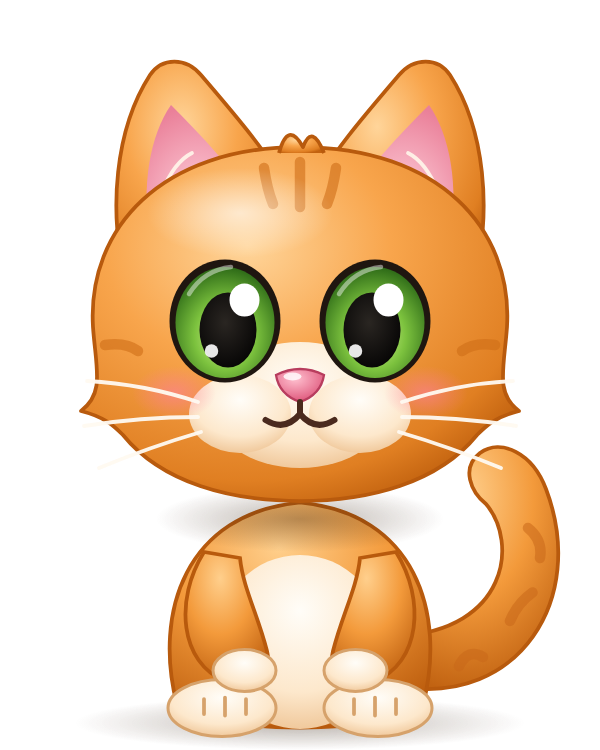

Toque no Miguel para falar
Oi! Eu sou o Miguel. Toque em mim e fale!

Para os pais e responsáveis
💡 Algumas frases que mudam a cada jogada usam a voz do aparelho. Para elas ficarem mais naturais: no Android, instale a voz "Português (Brasil)" em Configurações › Idioma › Saída de texto para voz. No iPhone, baixe a voz "Luciana (Melhorada)" em Ajustes › Acessibilidade › Conteúdo Falado › Vozes. Depois escolha ela aqui em cima.
